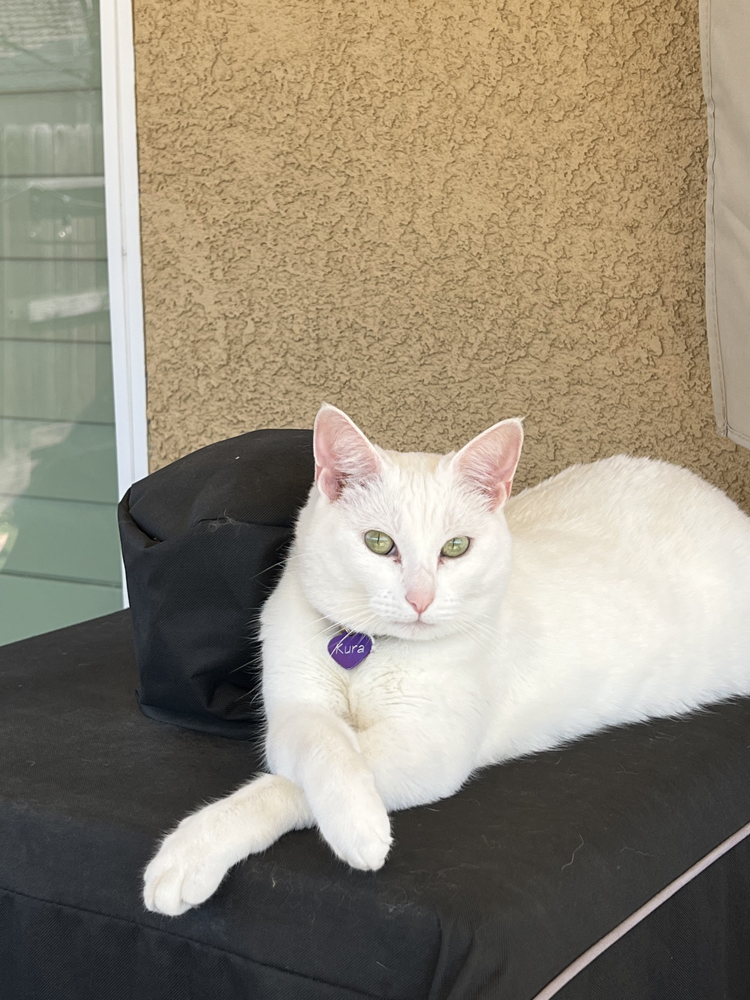
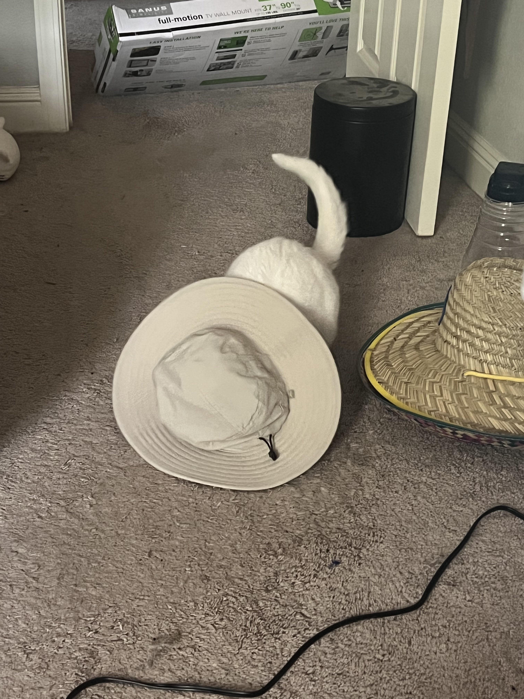
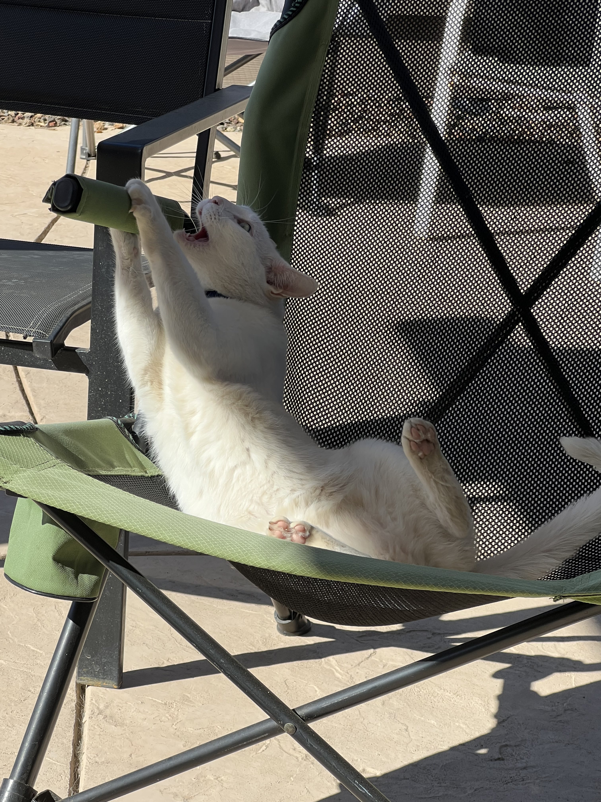
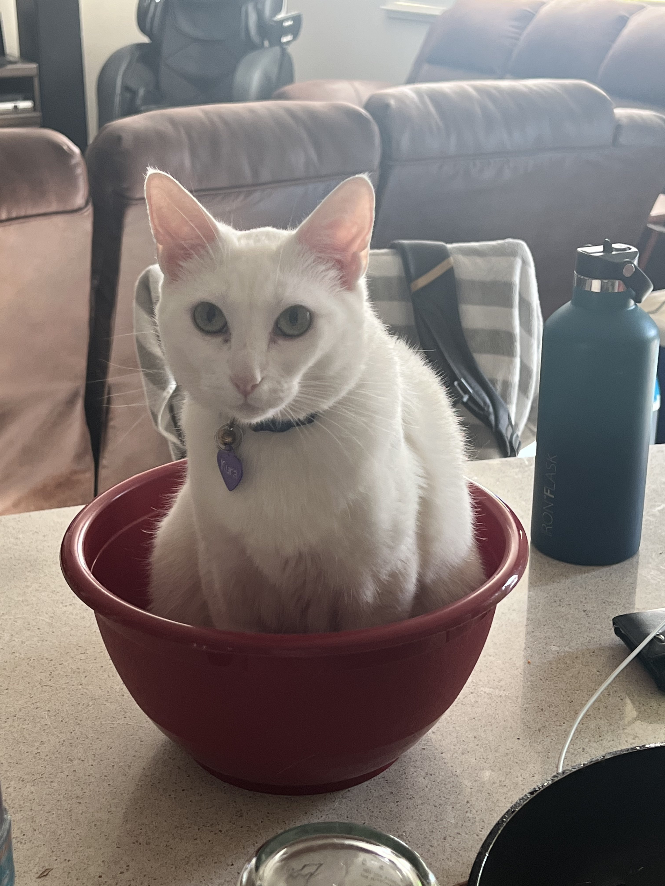
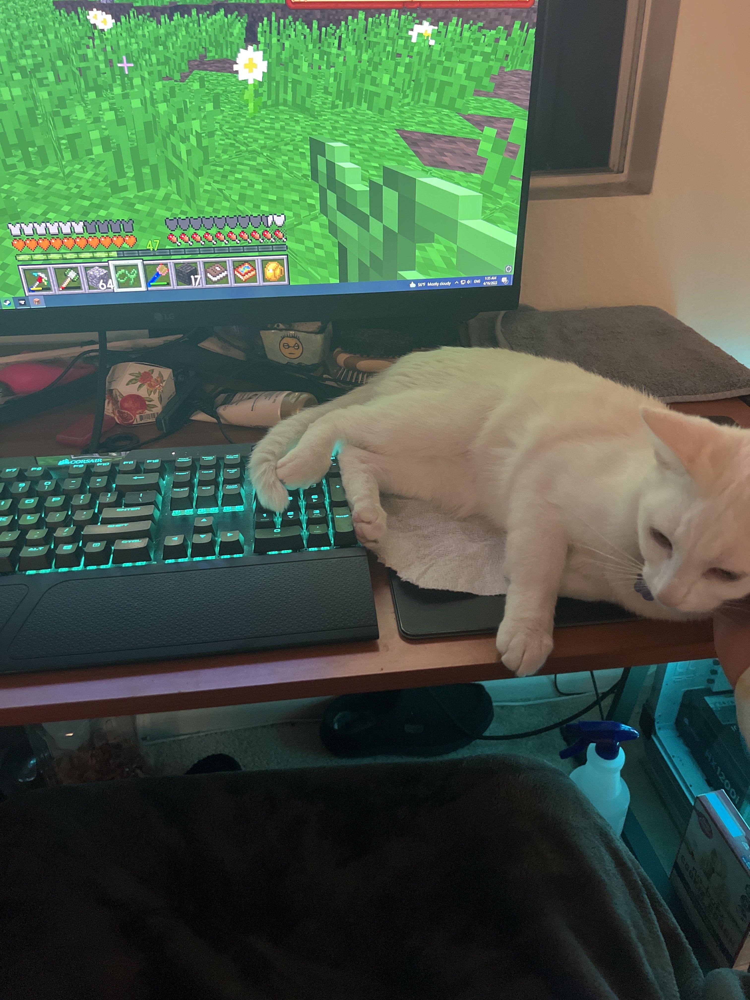
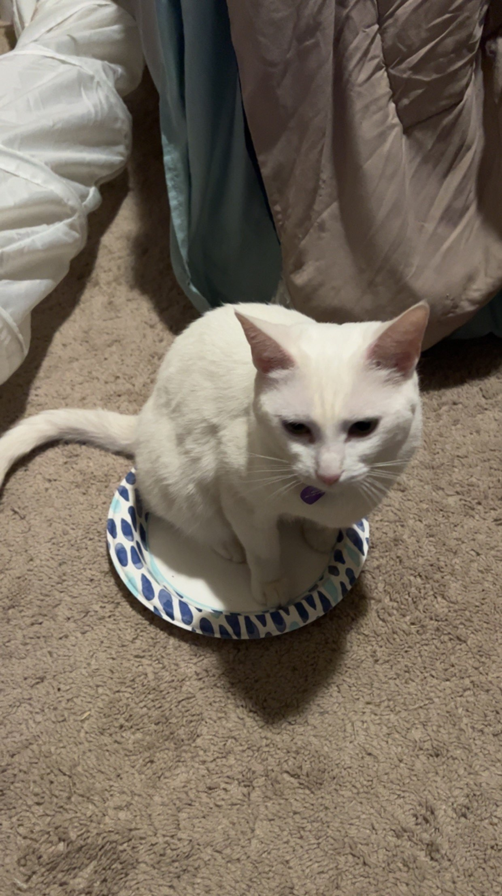
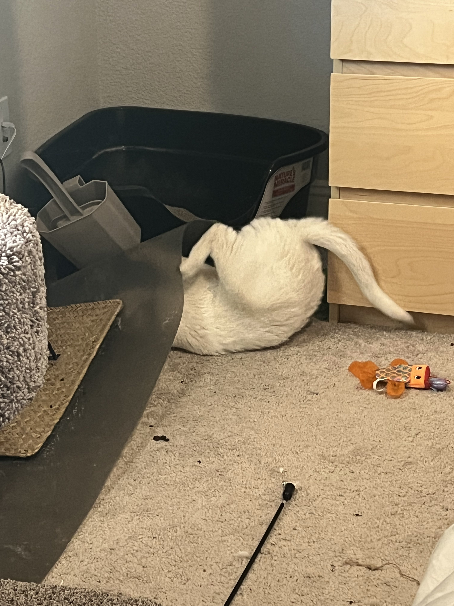
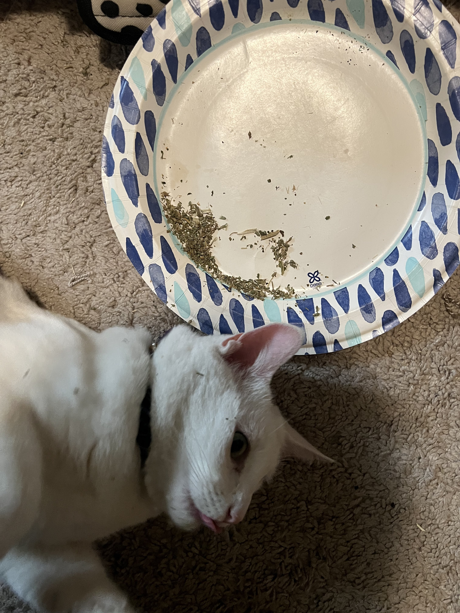

My name is Mateo Topete, i am 23 years old and have been programming for 10 years. I got my start using Lua in a mod called ComputerCraft on a modded minecraft server back
when i was 12-13 years old. I was hooked immediately and spent from then until sophomore year of high school experimenting with the mod and teaching myself what i could
manage to pick up from online videos. At one point i had signed up for "university" classes on a minecraft server where people would join a teamspeak call and
teach us about programming concepts in-game while we followed along.
In my second year of high school they offered their first computer programming course. The teacher for it had never really done programming before, but had signed up
to start the career-pathway for computer science at the school to give the students new opportunities. During that first year i was able to help teach her as much as she
taught me, and together we were able to work on our grasp of the fundamentals in order to help the rest of the class. The remaining 2 years of high school i took every new computer science class
that was offered and usually spent more time helping with instruction or debugging problems with the teacher and other students. Since the coursework was easy to complete
i also got to spend free time in class working on more "advanced" projects and generally exploring different areas of programming.
Most recently, i graduated with a Bachelors in computer science with a focus in Intelligent Systems from the University of California Irvine. Coursework and the rest of college
filled my time during those years, but after graduating i have returned to learning through personal projects and online resources. Currently i am looking into applications and techniques
for different areas of Artificial Intelligence, learning to mod Minecraft with a friend in a group project, and most recently decided to try my hand at creating a game on the Roblox
platform which will be a fun return to Lua where i started.
While searching for a job, i spend a lot of time on projects, following learning resources, and applications. In my free time i like to
Kura is my cat and co-pilot. She has the incredible 6th sense to know when i really need to focus and decide that she would like attention. Her hobbies include: sitting on plates that you planned to eat off of, looking at you from a distance but refusing to come closer, rolling on concrete, and of course chewing any plastic she can find.
       